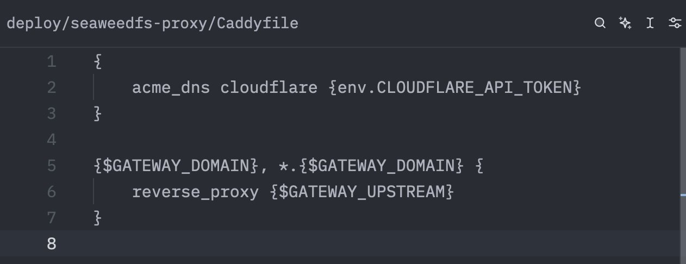

たたなこ
@tatanakots
@akazwz_ caddy好文明！我也喜欢用caddy

akazwz
@akazwz_
自建 S3 我最终选了 seaweedfs， 已经单机部署好了，域名和泛域名都搞好了，s3 支持 virtual host 的 形式，里面也能通过写 policy 让 bucket public read， 对 s3 的兼容很好，暂时满足我的需求。然后泛域名这个我用了 caddy 来反代，这个支持 dns acme，cloudflare dns 用起来很方便。 https://t.co/mlJhuGyI8g